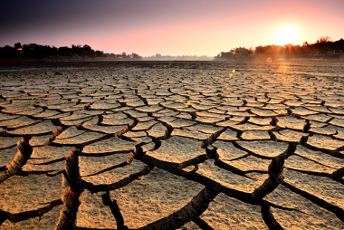

A escassez de água é um problema que afeta todo o mundo. No Brasil, apesar da porcentagem de 12% da água doce do planeta estar concentrada no nosso país, a crise hídrica é uma preocupação que também atinge os brasileiros. A situação parece contraditória, tendo em conta que todos aprendemos que a maior parte do planeta Terra é constituído de água (75%). Entretanto, o que as pessoas precisam realmente saber é que mais de 97% dessa água não pode ser consumida e nem utilizada em limpezas e higiene pessoal, por exemplo. Isso porque ela é salgada. Da água doce que sobra, a grande parte está congelada e outra parte substancial está no subsolo.
Enquanto isso, a água que existe nos reservatórios e entra nas redes de distribuição para serem utilizadas pelas pessoas corresponde a menos de 1%. E pouco sobra para consumo próprio, pois a produção agrícola exige uma grande quantidade de água para se desenvolver de forma satisfatória. Além disso, uma boa porcentagem dessa água também é requerida pelas indústrias. Infelizmente, isso não é tudo. Há água que poderia ser utilizada, mas acaba sendo contaminada por resíduos industriais e resíduos de aterros sanitários e lixões, entre outros. Saiba mais em Poluição da Água.
Há vários fatores que motivam a falta de água, dentre eles: seca, poluição e má distribuição desse recurso, apenas para citar os mais comuns. Quando falamos em má distribuição, estamos nos referindo ao fato de que nem sempre a região onde a concentração populacional é maior é aquela que possui mais água. Além disso, a distribuição da água é um problema de poder. É por isso que há conflitos mundiais pela posse de água, tal como acontece com as águas do rio Jordão.
Quanto mais pessoas, há mais consumo de água. Desta forma, daqui a uns anos, o aumento da população sinaliza uma crise hídrica grave. Pois se a água é um bem essencial, a falta dela terá impactos sociais, econômicos e ambientais. São exemplos esvaziamento das cidades, baixa produção agrícola e industrial, falta de emprego, entre muitos outros. Saiba mais sobre a Crise hídrica no Brasil.
É preciso conscientizar as pessoas que apesar da quantidade de água existente no planeta, nem toda pode ser consumida. Por isso, a água deve ser vista como um bem que precisa ser preservado. Seu uso deve ser racional.
O que pode se tornar um problema grave no Brasil relativamente à água, tem surgido desde 2014. Nessa altura, os níveis de precipitação começaram a baixar muito. Isso decorre da seca, bem como da gestão dos recursos naturais. A água é mal distribuída no nosso país. As regiões mais ricas em água não são as que têm maior concentração populacional. É o caso da cidade de São Paulo, que concentra o maior número de habitantes do Brasil. A cidade é abastecida pelo reservatório da Cantareira. A Bacia do Rio Amazonas, por sua vez, é a região que concentra mais água no Brasil. No entanto, transportar água dessa região para outras seria um processo bastante caro. Além disso, a retirada da água desse local poderia trazer um problema ambiental sério.
No mundo, são mais de 750 milhões as pessoas sem acesso à água potável. O problema é mais incidente em países do Oriente Médio e da África. Há conflitos no mundo que decorrem da escassez de água, um problema que muitas vezes está relacionado às desigualdades sociais. Dentre os principais conflitos por posse de água, podemos citar: Israel X Palestina e Jordânia, os quais contestam as águas do rio Jordão; Egito X Sudão, os quais contestam o controle das vazões do rio Nilo; Líbia X Chade, os quais contestam a exploração de aquíferos no Saara Central.
https://www.todamateria.com.br/escassez-de-agua/